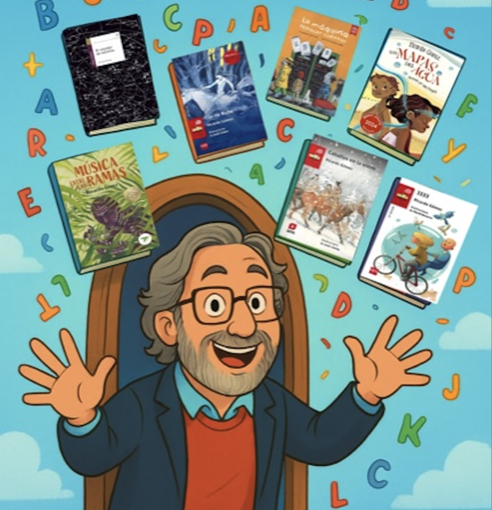
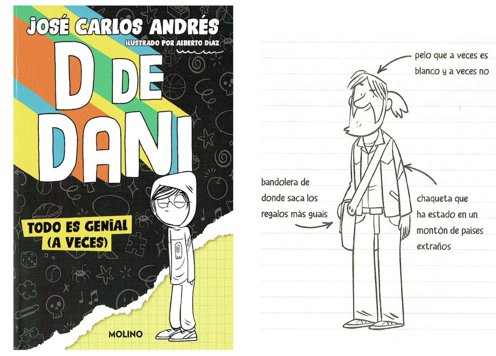
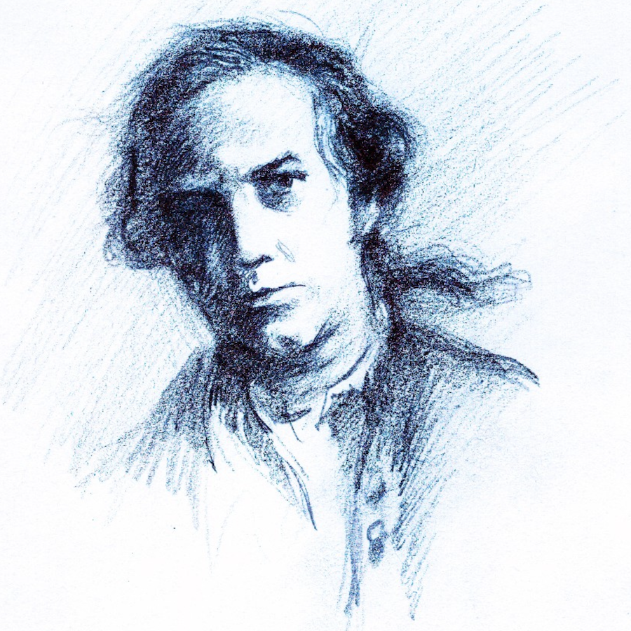
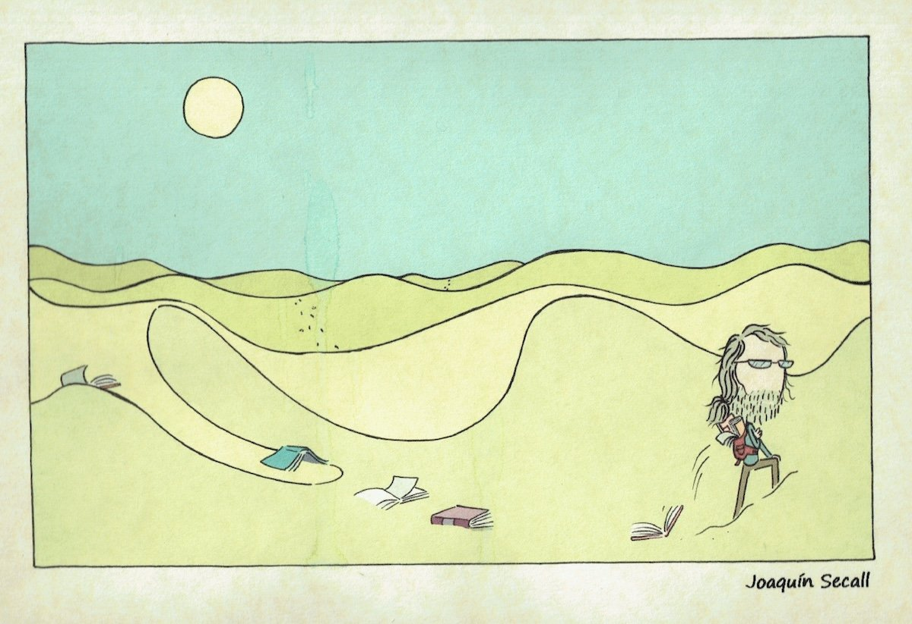

Alguien (no pude saber su nombre) hizo o encargó una caricatura mía para un cartel de unas jornadas realizadas por Amigos del Libro en Soria. Me resultó simpática y aquí la cuelgo. Gracias.

Y uno tiene amigos que, inesperadamente, te convierten en personajes de sus libros. Ahí está una muestra: José Carlos Andrés me imaginó y caracterizó así para un serie de libros... ¡Gracias también, amigo!

Otro amigo, Juan Ramón Alonso, cuando ilustró nuestros "7 cuentos crudos", me dibujó nada menos como el Capitán Cook a la hora de ilustrar el cuento "El fantasma del capitán Cook". ¡Nada menos!

Y también hace tiempo, otro buen amigo, Joaquín Secall, ilustrador y comiquero (entre otras cosas) me imaginó olvidando o repartiendo libros por las dunas del Sáhara, en relación con el Bubisher...
